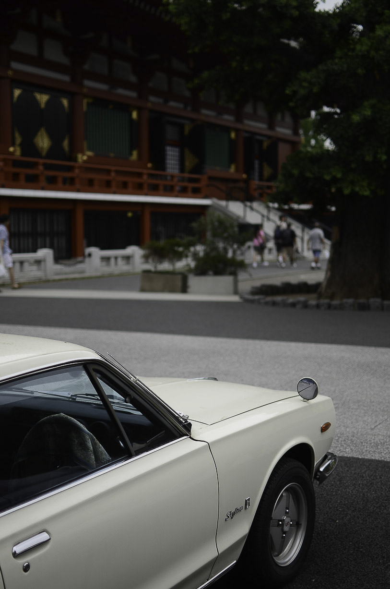
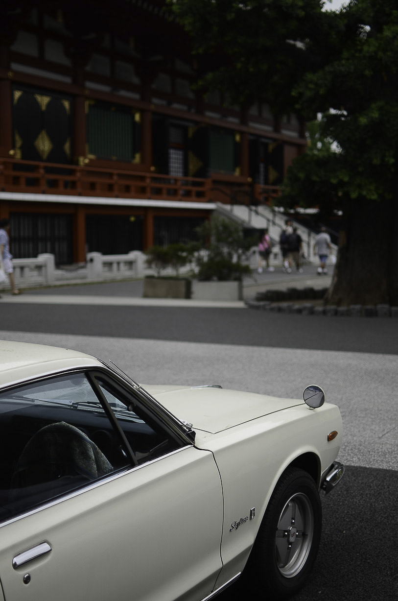
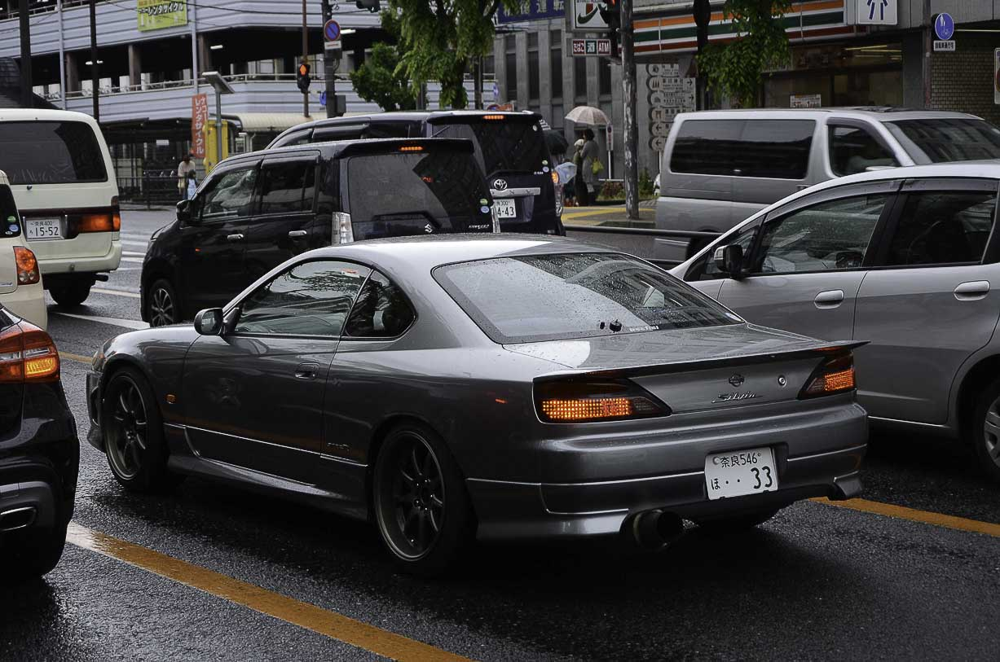
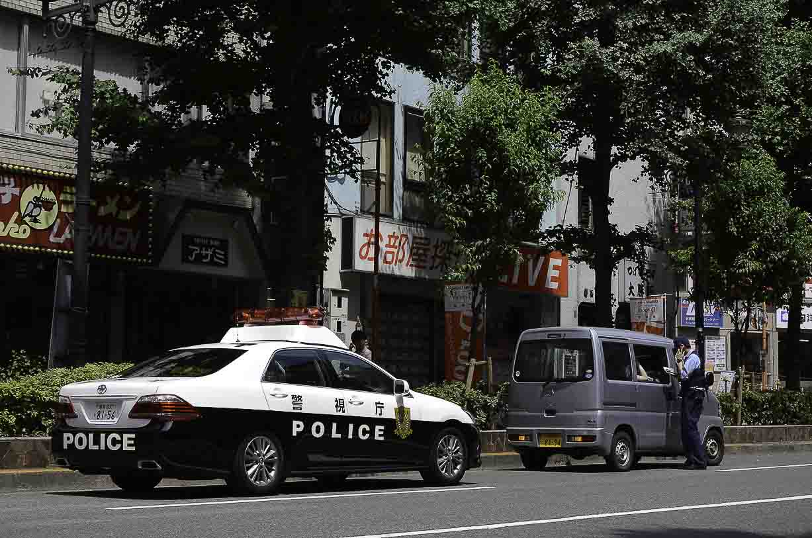
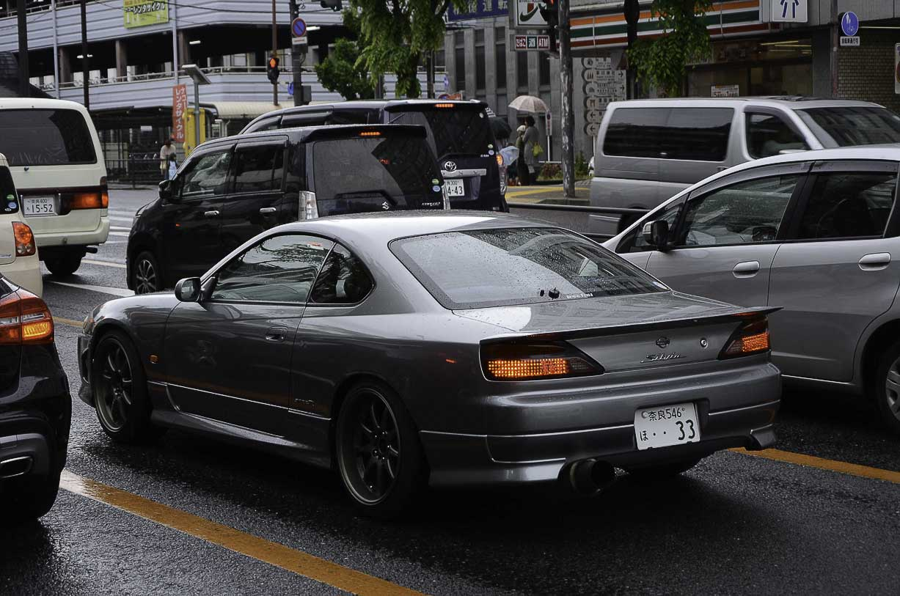
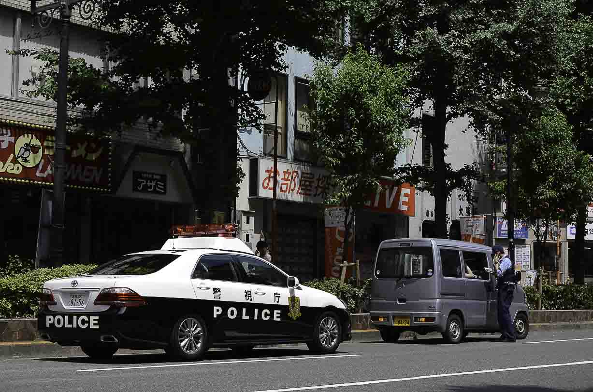

Metropolis >


From the sky reaching buildings of Tokyo megalopolis to fishing villages in Kumano region with a splash of Iceland for a good measure. I explore the skyscrapers, side streets, shopping malls, arcades and abandoned buildings. What I like the most about shooting in Japan is the fact that knowing no Japanese at all I’m never exactly sure what am I looking at. Is a sex shop? A restaurant? A brothel? A hobby store or Ernesto Che Guevara themed fuck hole? It’s often impossible to tell. The advantage is that as a gaijin I can get away with most things: trespassing, invading staff rooms, visiting used underwear stores – I’ve done it all and then some. Just don’t tell anyone.
A look at people. From outrageous fashion from the highstreets of Harajuku, to salary men playing Pokemon arcade machines. From the detail showcasing a single feature of an individual, to masses flowing through streets. When photographing people I usually shoot undercover. Most subjects were not even aware that I took a photo of them. Well, some of them possibly were but I didn’t care anyway. Does that make me a bad person? I like capturing the moment without the subject realising that I’m doing so, which gives the picture a raw unfiltered feel, a bit voyeuristic perhaps. Sometimes I’m surprised how people simply ignore my giant Nikon camera and go about living their lives, or when they realise and actually pose for a picture (much love for Japanese school girls!). The probably most hostile place towards street photography is London where everybody automatically assumes that you are either a pervert, a terrorist, a crazy person or all of the above. It’s strange times we are living in.


Since I was a kid I have been always fascinated with machines. When I was given my first car (a Daewoo Lanos powered by LPG) I became a car guy and a speed enthusiast. As with any obsession, it has spiralled into photographing Japanese domestic market cars, not only high performance ones but also daily driven kei cars, utility cars and shitboxes rotting away in the countryside. I’m one of those people who get excited more by seeing an AE86 parked in front of Seven Eleven than by a Maclaren P1. Real life cars usually tell a story about their owners. The way they are used instead of just being driven to car shows and kept in a garage otherwise. Whenever I travel I’m always on the look out for cars representing the local car scene. Inside this section you will find the most stylish and the most absurd cars I was able to spot while on my trips to Japan. I will also showcase the unique cars of Iceland and explore car events like Goodwood Festival of Speed and Japfest. Plus high speed trains and giant robots - of course.


I wouldn’t call myself a photographer. I’m a mare photo enthusiast. If I was to describe my style I would call it a 'run and gun'. Usually when taking photos I’m on the move, rushing from one place to another with a very limited time to capture the subject. If I see something interesting I stop, take a picture, and move on. I never went, and probably never will go on a photo trip. It always cracks me up when I see people photographing a single waterfall for hours, using tripods, ND filters, remote release and photo gear that is probably worth more than the car I drive. All this just to post it on Facebook, where the quality is lost anyway. Moreover, I think that in today’s world people are too obsessed with shitty Instagram-like aesthetics with oversaturated colours or filters. I prefer it when a photo captures reality and is usable straight out of the camera.
In my private life I also enjoy driving twisty roads and mountain passes, making scale models, electronic music, urbex, video games, cheap whisky and nature. I’m also a harsh noise 'musician' (artist sounds too fucking pretentious). You can check the stuff that I recorded with my friend Sadist here.
Fuck. Why does it always suck to write about yourself?


 

 


